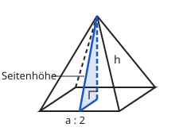

Kegel und Pyramide
Mit einem KI-Tutor lernen
Ein KI-Tutor erklärt dir diese Seite und hilft dir bei den Aufgaben. Wähl deinen Assistenten:
Mit Claude öffnen Mit ChatGPT öffnen Mit Mistral Vibe öffnen
Du nutzt dein eigenes Konto beim Anbieter. Der Assistent ist kein Angebot von lernapps.net: lernapps liefert nur Inhalte und Aufgaben. Die Wahl gilt für alle Seiten, nur auf diesem Gerät.
Kegel in den Zylinder schütten
Wenn du wissen willst, wie viel in einen Kegel oder eine Pyramide passt, vergleichst du sie mit einem Zylinder oder Prisma. Probiere es mit Wasser aus.
Ein Kegel und ein Zylinder haben dieselbe Grundfläche und dieselbe Höhe. Der Kegel ist mit Wasser gefüllt, der Zylinder noch leer. Mit dem Knopf füllst du den Kegel und schüttest ihn in den Zylinder, jedes Mal ein Kegel voll. Der blaue Teil zeigt das Wasser.
Der Kegel wurde 0 mal gefüllt und umgeschüttet. Der Zylinder ist zu 0 von 3 Teilen gefüllt.
Ein Kegel und ein Zylinder haben dieselbe Grundfläche und dieselbe Höhe. Der Kegel ist voll Wasser. Du schüttest ihn in den Zylinder:
- Nach 1 Mal ist der Zylinder zu einem Drittel gefüllt.
- Nach 2 Mal ist er zu zwei Dritteln gefüllt.
- Nach 3 Mal ist er ganz voll.
Der Kegel fasst also ein Drittel des Zylinders.
Aufgabe
Lösung
Richtige Antwort: 100 cm³
Dreimal Umschütten füllt den Zylinder, also fasst der Kegel ein Drittel: 300 : 3 = 100 cm³.
Ein Drittel des Prismas
Wenn du das Volumen ausrechnen willst, ohne umzuschütten, nutzt du das Ergebnis des Versuchs als Formel.
Das Umschütten zeigt, wie das Volumen eines Kegels entsteht: ein Drittel des Zylinders mit derselben Grundfläche G und derselben Höhe h. Für die Pyramide gilt dasselbe, wenn du sie mit einem Prisma gleicher Grundfläche und Höhe vergleichst. Das nimmst du hier als gegeben.
Das versteckte Dreieck im Kegel
Wenn du die Oberfläche brauchst, zum Beispiel für das Papier einer Tüte, brauchst du die Länge der Mantellinie. Du findest sie in einem Dreieck, das im Körper steckt.
Für den Mantel brauchst du die Mantellinie s. Der Kegel ist gerade: Seine Spitze liegt senkrecht über dem Mittelpunkt des Grundkreises. Im Bild liegen Höhe h, Radius r und Mantellinie s in einem rechtwinkligen Dreieck. Der rechte Winkel liegt am Mittelpunkt des Grundkreises.
- Mantellinie
Die Mantellinie eines Kegels ist die Strecke von der Spitze zu einem Punkt am Rand des Grundkreises. Sie ist länger als die Höhe und länger als der Radius.
 © CC0-1.0
© CC0-1.0Das blaue Dreieck hat die Katheten h und r und die Hypotenuse s.
Das ist der Satz des Pythagoras: Die Katheten sind r und h, die Hypotenuse ist s.
Rollst du den Mantel ab, entsteht ein Kreisausschnitt mit dem Radius s. Sein Bogen ist so lang wie der Umfang des Grundkreises, 2 · π · r. Für seine Fläche gilt dasselbe wie bei den Tortenstücken auf der Seite „Die Fläche des Kreises“: Die Fläche ist die Hälfte von Bogen mal Radius.
Wenn du die Oberfläche einer Pyramide brauchst, suchst du dasselbe Dreieck wie beim Kegel. Die Pyramide ist gerade und ihr Boden ein Quadrat mit der Kante a. Die Höhe h trifft die Mitte des Bodens. Von dort geht eine Strecke der Länge a : 2 zur Mitte einer Kante. Die Seitenhöhe geht von der Spitze zur Mitte dieser Kante, sie ist die Hypotenuse.

© CC0-1.0Höhe, halbe Grundkante und Seitenhöhe: das blaue Dreieck hat einen rechten Winkel am Boden-Mittelpunkt.
Der Mantel der Pyramide besteht aus vier gleichen Dreiecken mit der Grundseite a und der Höhe .
Ein Kegel mit r = 3 cm
Wenn du die Formeln an einem Kegel prüfen willst, rechne ihn mit r = 3 cm durch.
Radius 3 cm, Höhe 4 cm
Mantellinie 5 cm, Volumen 37,68 cm³, Oberfläche 75,36 cm². Die Mantellinie nimmst du für den Mantel, nicht die Höhe.
Aufgaben
Aufgabe
Drei Beispielaufgaben, jede mit ihrer Lösung:
Aufgabe Nr. 1
Ein Kegel hat den Radius r = 6 cm und die Höhe h = 11 cm. Berechne sein Volumen mit π ≈ 3,14.
Tipp
Rechne erst das Volumen des Zylinders π · r² · h, dann ein Drittel davon.
Lösung
Richtige Antwort: 414,48 cm³
Aufgabe Nr. 2
Ein Kegel hat den Radius r = 3 cm und die Höhe h = 11 cm. Berechne sein Volumen mit π ≈ 3,14.
Tipp
Rechne erst das Volumen des Zylinders π · r² · h, dann ein Drittel davon.
Lösung
Richtige Antwort: 103,62 cm³
Aufgabe Nr. 3
Ein Kegel hat den Radius r = 3 cm und die Höhe h = 5 cm. Berechne sein Volumen mit π ≈ 3,14.
Tipp
Rechne erst das Volumen des Zylinders π · r² · h, dann ein Drittel davon.
Lösung
Richtige Antwort: 47,1 cm³
Aufgabe
Drei Beispielaufgaben, jede mit ihrer Lösung:
Aufgabe Nr. 1
Ein Kegel hat den Radius r = 4 cm und die Höhe h = 3 cm. Wie lang ist die Mantellinie s?
Tipp
Höhe, Radius und Mantellinie bilden ein rechtwinkliges Dreieck. Die Mantellinie liegt gegenüber dem rechten Winkel.
Lösung
- Die Wurzel daraus ist 5.
Richtige Antwort: 5 cm
Aufgabe Nr. 2
Ein Kegel hat den Radius r = 12 cm und die Höhe h = 16 cm. Wie lang ist die Mantellinie s?
Tipp
Höhe, Radius und Mantellinie bilden ein rechtwinkliges Dreieck. Die Mantellinie liegt gegenüber dem rechten Winkel.
Lösung
- Die Wurzel daraus ist 20.
Richtige Antwort: 20 cm
Aufgabe Nr. 3
Ein Kegel hat den Radius r = 9 cm und die Höhe h = 12 cm. Wie lang ist die Mantellinie s?
Tipp
Höhe, Radius und Mantellinie bilden ein rechtwinkliges Dreieck. Die Mantellinie liegt gegenüber dem rechten Winkel.
Lösung
- Die Wurzel daraus ist 15.
Richtige Antwort: 15 cm
Aufgabe
Drei Beispielaufgaben, jede mit ihrer Lösung:
Aufgabe Nr. 1
Ein Kegel hat den Radius r = 12 cm, die Höhe h = 16 cm und die Mantellinie s = 20 cm. Berechne seine gesamte Oberfläche mit π ≈ 3,14.
Tipp
Die Oberfläche ist die Grundfläche π · r² plus der Mantel π · r · s.
Lösung
Richtige Antwort: 1205,76 cm²
Aufgabe Nr. 2
Ein Kegel hat den Radius r = 15 cm, die Höhe h = 8 cm und die Mantellinie s = 17 cm. Berechne seine gesamte Oberfläche mit π ≈ 3,14.
Tipp
Die Oberfläche ist die Grundfläche π · r² plus der Mantel π · r · s.
Lösung
Richtige Antwort: 1507,2 cm²
Aufgabe Nr. 3
Ein Kegel hat den Radius r = 12 cm, die Höhe h = 5 cm und die Mantellinie s = 13 cm. Berechne seine gesamte Oberfläche mit π ≈ 3,14.
Tipp
Die Oberfläche ist die Grundfläche π · r² plus der Mantel π · r · s.
Lösung
Richtige Antwort: 942 cm²
Aufgabe
Drei Beispielaufgaben, jede mit ihrer Lösung:
Aufgabe Nr. 1
Eine Pyramide hat ein Quadrat mit der Kante a = 12 cm als Grundfläche und die Höhe h = 11 cm. Berechne ihr Volumen.
Tipp
Die Grundfläche ist a · a. Das Volumen ist ein Drittel von Grundfläche mal Höhe.
Lösung
Richtige Antwort: 528 cm³
Aufgabe Nr. 2
Eine Pyramide hat ein Quadrat mit der Kante a = 12 cm als Grundfläche und die Höhe h = 9 cm. Berechne ihr Volumen.
Tipp
Die Grundfläche ist a · a. Das Volumen ist ein Drittel von Grundfläche mal Höhe.
Lösung
Richtige Antwort: 432 cm³
Aufgabe Nr. 3
Eine Pyramide hat ein Quadrat mit der Kante a = 10 cm als Grundfläche und die Höhe h = 6 cm. Berechne ihr Volumen.
Tipp
Die Grundfläche ist a · a. Das Volumen ist ein Drittel von Grundfläche mal Höhe.
Lösung
Richtige Antwort: 200 cm³
Aufgabe
Drei Beispielaufgaben, jede mit ihrer Lösung:
Aufgabe Nr. 1
Eine gerade Pyramide hat ein Quadrat mit der Kante a = 10 cm als Grundfläche und die Höhe h = 12 cm. Berechne ihre Oberfläche. Die Seitenhöhe kommt als ganze Zahl heraus.
Tipp
Erst die Seitenhöhe: h² plus (a : 2)², dann die Wurzel. Dann O = a² + 2 · a · Seitenhöhe.
Lösung
- Die Seitenhöhe ist 13 cm. Dann ist die Oberfläche 360 cm².
Richtige Antwort: 360 cm²
Aufgabe Nr. 2
Eine gerade Pyramide hat ein Quadrat mit der Kante a = 8 cm als Grundfläche und die Höhe h = 3 cm. Berechne ihre Oberfläche. Die Seitenhöhe kommt als ganze Zahl heraus.
Tipp
Erst die Seitenhöhe: h² plus (a : 2)², dann die Wurzel. Dann O = a² + 2 · a · Seitenhöhe.
Lösung
- Die Seitenhöhe ist 5 cm. Dann ist die Oberfläche 144 cm².
Richtige Antwort: 144 cm²
Aufgabe Nr. 3
Eine gerade Pyramide hat ein Quadrat mit der Kante a = 6 cm als Grundfläche und die Höhe h = 4 cm. Berechne ihre Oberfläche. Die Seitenhöhe kommt als ganze Zahl heraus.
Tipp
Erst die Seitenhöhe: h² plus (a : 2)², dann die Wurzel. Dann O = a² + 2 · a · Seitenhöhe.
Lösung
- Die Seitenhöhe ist 5 cm. Dann ist die Oberfläche 96 cm².
Richtige Antwort: 96 cm²
Aufgabe
Lösung
Richtige Antwort: 13 cm
Das Dreieck hat die Katheten h = 12 cm und a : 2 = 5 cm. Dann ist die Seitenhöhe zum Quadrat 12² + 5² = 169, also 13 cm.
Aufgabe
Lösung
30 cm³ richtige Antwort
Der Kegel fasst ein Drittel des Zylinders: 90 : 3 = 30.
45 cm³
Das wäre die Hälfte. Beim Umschütten brauchst du aber drei Kegel, nicht zwei.
270 cm³
Du hast mit 3 multipliziert. Der Kegel ist der kleinere Körper und fasst weniger.
Drei Kegelfüllungen ergeben einen Zylinder, also ist der Kegel ein Drittel des Zylinders.
Das kannst du jetzt: Du kannst Volumen und Oberfläche von Kegel und Pyramide berechnen und das rechtwinklige Dreieck für Mantellinie und Seitenhöhe im Körper finden.
Fehler gefunden oder eine Idee für diese App?